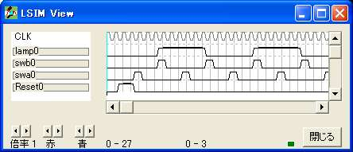
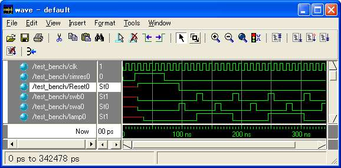
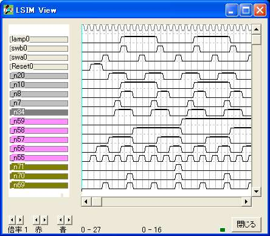

{ =============================================== }
{ ランプ点滅 }
{ =============================================== }
logicname sample
{ =============================================== }
{ 手続き譜 }
{ =============================================== }
procedure sw
input swa,swb;
output q;
bitr regq;
if (swb)
regq=0;
else
if (swa)
regq=1;
else
regq=regq;
endif
endif
q=regq;
endp
{ =============================================== }
{ 実効譜 }
{ =============================================== }
entity main
input Reset;
input swa,swb;
output lamp;
bitn q;
bitr on[2];
bitr reglamp[2];
if (!Reset)
q=sw(swa,swb);
if (q)
if (on==0)
on=1;
else
on=2;
endif
else
on=0;
endif
if (on.0)
reglamp=reglamp+1;
else
reglamp=reglamp;
endif
endif
lamp=reglamp.0;
ende
{ =============================================== }
{ 機能実行譜 }
{ =============================================== }
entity sim
output Reset;
output swa,swb;
output lamp;
bitr tc[5];
input simres;
simres=0; {←LSIMを使うとき以外は外すか注釈にする。}
part main(Reset,swa,swb,lamp)
if (!simres) tc=tc+1; endif
switch(tc)
case 0: Reset=1;
case 1: Reset=1;
case 2: Reset=1;
case 3: swa=1;
case 6: swb=1;
case 9: swa=1;
case 12: swb=1;
case 15: swa=1;
case 18: swb=1;
case 21: swa=1;
case 24: swb=1;
case 27: swa=1;
case 30: swb=1;
endswitch
ende
endlogic

module main (
clk
,n_n20 // reg
,swb0 // input
,swa0 // input
,Reset0 // input
,n_n34 // wire
,n_n7 // reg
,n_n8 // reg
,n_n10 // reg
,lamp0 // output
);
input clk;
input swb0 ;
input swa0 ;
input Reset0 ;
output lamp0 ;
output n_n20 ;
reg n_n20 ;
output n_n7 ;
reg n_n7 ;
output n_n8 ;
reg n_n8 ;
output n_n10 ;
reg n_n10 ;
output n_n34 ;
wire n_n34 ;
// equations
always @ (posedge clk) begin
n_n20 <= (~swb0 & swa0 & ~Reset0)
| (n_n20 & ~swb0 & ~swa0 & ~Reset0) ;
n_n7 <= (~Reset0 & n_n20 & ~n_n34) ;
n_n8 <= (~Reset0 & n_n20 & n_n34) ;
n_n10 <= (~n_n10 & ~Reset0 & n_n7)
| (n_n10 & ~Reset0 & ~n_n7) ;
end
assign n_n34 = (n_n7)
| (n_n8) ;
assign lamp0 = (n_n10) ;
endmodule
module sim (
clk
,n_n20 // reg
,sim_swb0 // output
,swb0 // output
,sim_swa0 // output
,swa0 // output
,sim_Reset0 // output
,Reset0 // output
,n_n34 // wire
,n_n7 // reg
,n_n8 // reg
,n_n10 // reg
,sim_lamp0 // output
,lamp0 // output
,n_n55 // reg
,n_n56 // reg
,n_n69 // wire
,n_n57 // reg
,n_n70 // wire
,n_n58 // reg
,n_n71 // wire
,n_n59 // reg
,simres0 // input
);
input clk;
output sim_swb0 ;
output sim_swa0 ;
output sim_Reset0 ;
output sim_lamp0 ;
input simres0 ;
output n_n20 ;
reg n_n20 ;
output n_n7 ;
reg n_n7 ;
output n_n8 ;
reg n_n8 ;
output n_n10 ;
reg n_n10 ;
output n_n55 ;
reg n_n55 ;
output n_n56 ;
reg n_n56 ;
output n_n57 ;
reg n_n57 ;
output n_n58 ;
reg n_n58 ;
output n_n59 ;
reg n_n59 ;
output n_n34 ;
wire n_n34 ;
output n_n69 ;
wire n_n69 ;
output n_n70 ;
wire n_n70 ;
output n_n71 ;
wire n_n71 ;
output swb0 ;
output swa0 ;
output Reset0 ;
output lamp0 ;
// equations
always @ (posedge clk) begin
n_n20 <= (~swb0 & swa0 & ~Reset0)
| (n_n20 & ~swb0 & ~swa0 & ~Reset0) ;
n_n7 <= (~Reset0 & n_n20 & ~n_n34) ;
n_n8 <= (~Reset0 & n_n20 & n_n34) ;
n_n10 <= (~n_n10 & ~Reset0 & n_n7)
| (n_n10 & ~Reset0 & ~n_n7) ;
n_n55 <= (~n_n55 & ~simres0) ;
n_n56 <= (~n_n56 & n_n55 & ~simres0)
| (n_n56 & ~n_n55 & ~simres0) ;
n_n57 <= (~n_n57 & n_n56 & n_n55 & ~simres0)
| (n_n57 & ~simres0 & ~n_n69) ;
n_n58 <= (~n_n58 & n_n57 & n_n56 & n_n55 & ~simres0)
| (n_n58 & ~simres0 & ~n_n70) ;
n_n59 <= (~n_n59 & n_n58 & n_n57 & n_n56 & n_n55 & ~simres0)
| (n_n59 & ~simres0 & ~n_n71) ;
end
assign n_n34 = (n_n7)
| (n_n8) ;
assign lamp0 = (n_n10) ;
assign n_n69 = (n_n56 & n_n55 & ~simres0) ;
assign n_n70 = (n_n57 & n_n56 & n_n55 & ~simres0) ;
assign n_n71 = (n_n58 & n_n57 & n_n56 & n_n55 & ~simres0) ;
assign Reset0 = (~n_n56 & ~n_n57 & ~n_n58 & ~n_n59)
| (~n_n57 & ~n_n58 & ~n_n59 & ~n_n55) ;
assign swa0 = (n_n55 & n_n56 & ~n_n57 & ~n_n58 & ~n_n59)
| (n_n55 & ~n_n56 & ~n_n57 & n_n58 & ~n_n59)
| (n_n55 & n_n56 & n_n57 & n_n58 & ~n_n59)
| (n_n55 & ~n_n56 & n_n57 & ~n_n58 & n_n59)
| (n_n55 & n_n56 & ~n_n57 & n_n58 & n_n59) ;
assign swb0 = (~n_n55 & n_n56 & n_n57 & ~n_n58 & ~n_n59)
| (~n_n55 & ~n_n56 & n_n57 & n_n58 & ~n_n59)
| (~n_n55 & n_n56 & ~n_n57 & ~n_n58 & n_n59)
| (~n_n55 & ~n_n56 & ~n_n57 & n_n58 & n_n59)
| (~n_n55 & n_n56 & n_n57 & n_n58 & n_n59) ;
assign sim_swb0 = swb0 ;
assign sim_swa0 = swa0 ;
assign sim_Reset0 = Reset0 ;
assign sim_lamp0 = lamp0 ;
endmodule
`timescale 1ps/1ps
module test_bench ;
reg clk ;
reg simres0 ;
wire n_n20 ;
wire sim_swb0 ;
wire swb0 ;
wire sim_swa0 ;
wire swa0 ;
wire sim_Reset0 ;
wire Reset0 ;
wire n_n34 ;
wire n_n7 ;
wire n_n8 ;
wire n_n10 ;
wire sim_lamp0 ;
wire lamp0 ;
wire n_n55 ;
wire n_n56 ;
wire n_n69 ;
wire n_n57 ;
wire n_n70 ;
wire n_n58 ;
wire n_n71 ;
wire n_n59 ;
sim sim (
clk,
n_n20,
sim_swb0,
swb0,
sim_swa0,
swa0,
sim_Reset0,
Reset0,
n_n34,
n_n7,
n_n8,
n_n10,
sim_lamp0,
lamp0,
n_n55,
n_n56,
n_n69,
n_n57,
n_n70,
n_n58,
n_n71,
n_n59,
simres0);
parameter STEP = 10000 ;
always #(STEP/2) clk = ~clk ;
initial begin
clk = 0 ;
simres0 = 0 ;
#(STEP*2)
simres0 = 1 ;
#(STEP*5)
simres0 = 0 ;
#(STEP*30)
// $finish ;
$stop ;
end
endmodule


LSIM FILE OUT
0 (20): _7.0 -> _n20
1 (51):ut swb0
2 (49):ut swa0
3 (47):ut Reset0
4 (34): _ic13.5 -> _n34
5 (7): on.0 -> _n7
6 (8): on.1 -> _n8
7 (10): reglamp.0 -> _n10
8 (53):ut lamp0
9 (55): tc.0 -> _n55
10 (56): tc.1 -> _n56
11 (69): _26.2 -> _n69
12 (57): tc.2 -> _n57
13 (70): _26.3 -> _n70
14 (58): tc.3 -> _n58
15 (71): _26.4 -> _n71
16 (59): tc.4 -> _n59